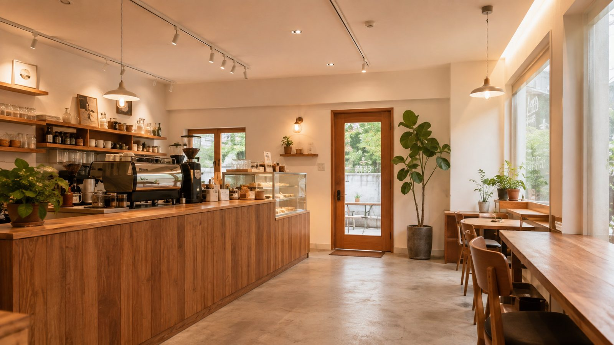

분쟁은 대부분 범위에서 시작됩니다
계약서에 원상복구 범위가 구체적으로 적혀 있는 경우는 드뭅니다. 임대인은 넓게, 임차인은 좁게 읽습니다. 원칙은 본인이 설치한 시설을 걷어내는 것이지만, 전 임차인 시설을 승계했거나 특약이 있으면 달라집니다.
범위 판정이 먼저
철거 대상 / 제외 가능 / 협의 대상으로 시설을 나눕니다. 범위가 정해져야 견적이 의미가 있습니다.
직접 할 것과 맡길 것
도장 원복, 필름 제거, 집기 반출은 직접. 덕트·급배수·전기·가스·구조는 발주. 여기서 비용이 갈립니다.
기록이 곧 근거
스스로시공소로 공사한 점포는 입점 당시 사진과 설치 목록이 남아 있어 판정이 빠릅니다.
복구 범위 간이진단
네 가지만 답하면 시설별로 어디에 해당하는지 초안을 드립니다. 법률 자문이 아니며, 계약서 전문을 봐야 확정됩니다.
상품
| 상품 | 내용 | 형태 |
|---|---|---|
| 범위 간이진단 | 계약서 조항 유형과 설치 시설을 넣으면 의무 / 협의 / 초과 요구를 분류 | 무료 · 즉시 |
| 원상복구 리포트 Lite | 범위 판정과 근거, 직접/발주 분리, 예상 비용 범위 | 온라인 |
| 협의 패키지 Pro | Lite + 임대인에게 보내는 서면 초안 + 철거 대상 목록 + 완료확인서 양식 + 30분 상담 | 온라인 + 상담 |
| 현장 진단 | 실측, 시설 촬영·목록화, 범위 확정 보고서 | 1회 방문 |
| 철거 파트너 매칭 | 확정 범위 기준으로 검증 파트너 2~3곳 비교견적 | 공정별 |
| 퇴거 관리 | 철거 감독, 완료 사진, 임대인 입회 지원 | 프로젝트 |
서면 초안은 협의를 돕는 참고 문서이며 법률 사무가 아닙니다. 분쟁이 진행 중이면 변호사 상담을 권합니다.
직접 할 복구에 필요한 도구 — 원상복구 셀프 키트
장대 스크레퍼, 히트건, 본드 제거제, 마대, 퍼티, 원복용 페인트까지. 범위를 정한 뒤 직접 할 부분만 준비하세요.
걷어낸 시설은 다음 창업자에게
에어컨, 조명, 테이블처럼 쓸 수 있는 집기·설비를 폐기하지 않고 스스로창업 고객에게 연결합니다. 철거·폐기 비용이 줄고, 다음 창업자의 비용도 줄어듭니다.

퇴거를 앞두고 계신가요?
범위부터 정하면 견적이 달라집니다. 무료 간이진단 후 필요한 만큼만 다음 단계로.